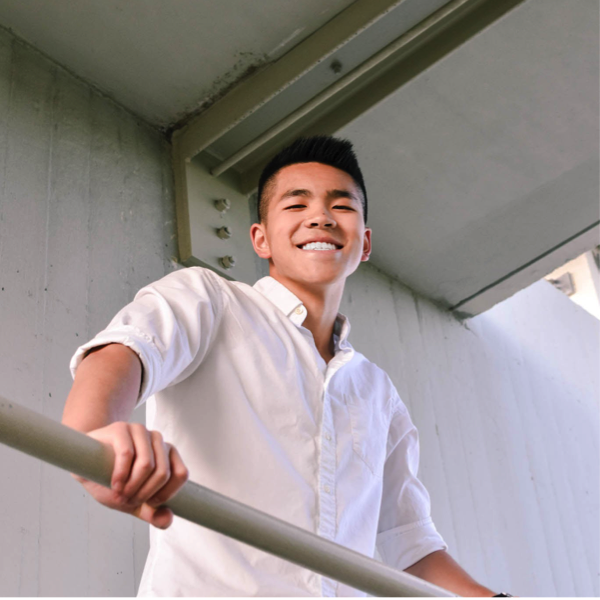

Global Internships: Singapore
Dennis Yang
Global Internships is an 8 week Berkeley sponsered program which allows students to spend a summer aboard, while also gaining internship experience
Internship at HedgeSPA
HedgeSPA is a Fintech Startup that partners with banks and hedge funds to develop a highly quantitative investment platform
Developed a secure mail and file sharing server
Created an MSCI portfolio for the Asian market
Networked to attract more clients
Photo Gallery
Some of my favorite moments from the summer
Some of the best friends I've ever made
"Crystal Universe" Gallary at the Art and Science Mueseum
A famous white sand beach in Indonesia
Blog
No doubt this past summer was the best experience of my life, and I highly recommend it to every student here at Berkeley. I could talk about my work experience, and how that taught me so much about actual software engineering in industry, or the reflective and historical classes we took at the National Singapore University, but this summer was about so much more.
Everyday was filled with this infinite adventurous excitment to explore and have fun - whether that meant the nightlife, national parks, or even other countries. It taught me what it meant to be a global citizen and to me more aware of the unique surroundings, from the food to the architecture, that speak so much to an environment. People always say studying abroad it is the best experience of their lives, and while its so hard to fully describe why, I wholeheartedly agree.